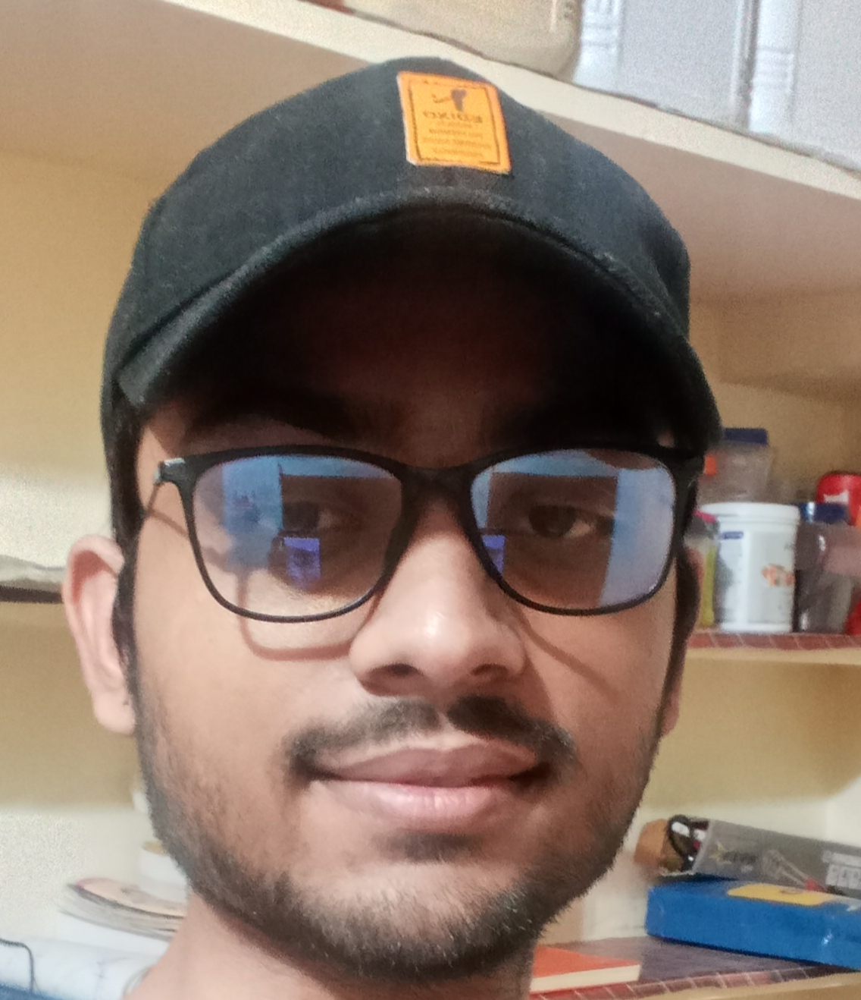

|  |
Digendra Singh(Mechanical Engineer) I have completed my engineering from Jabalpur Enigneering College.I secured All India Rank 1560 in GATE 2020,I have also passed the written test of BARC and got a Call for interview. |
| College/School | Course Name | Percentage/Score |
|---|---|---|
| 1.Jabalpur Engineering College | Mechanical Engineering | 80% | 2.Adtiya Birla Public School | Higher Secondary | 92% |
| 3.Adtiya Birla Public School | Secondary | 9.8 CGPA |
| Name Of Institution | Name Of Programme | Course Content | Duration |
|---|---|---|---|
| MECHTECH SOLUTIONS JABALPUR | ONLINE TRAINING | CATIA SOFTWARE | 1 YEAR |
| GRASIM NAGDA | VOCATIONA L TRAINING | VISCOSE STAPLE FIBER MANUFACTURING BASIC PROCESS AND PUMPS TROUBLESHOOTING | 1 MONTH |
I have done my internship in Gun Carriage Factory of Jabalpur where i got the Complete Knowledge of how Guns are made ad how filling is done in bombs.
Till now,I have worked on various projects using below mentioned Softwares
Quick learner, Hardworking and outgoing (making friends easily) i think these are my greatest strength which will definately help me working effeciently in organisation and help in achieving its goals. Due to overthinking and overanalyzing sometimes i get caught in process and it may take time to complete the task , but this also makes me a cautious person and helps to analyse situation in better way which i think would help in positive manner to organisation.
My Hobbies Contact Me